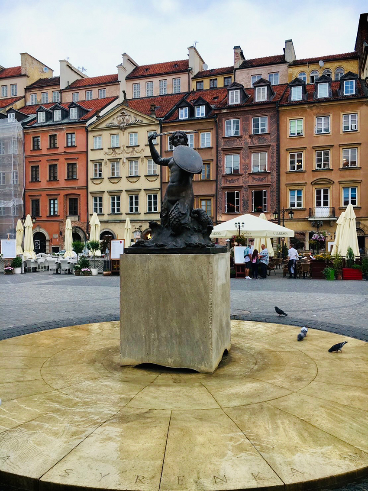
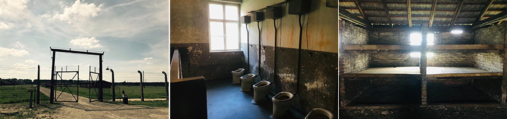
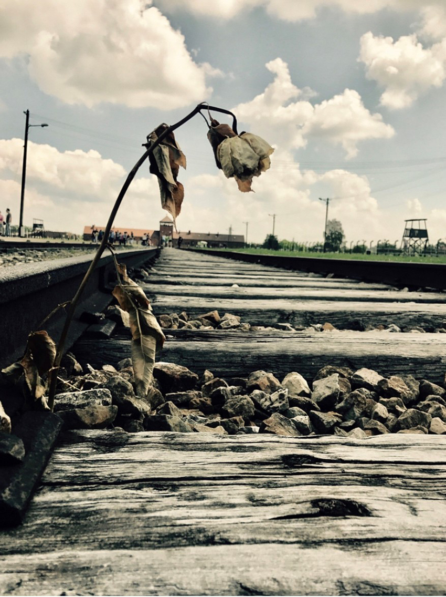
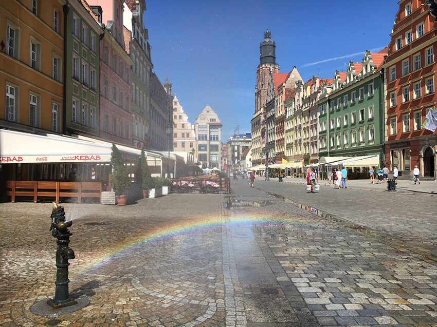
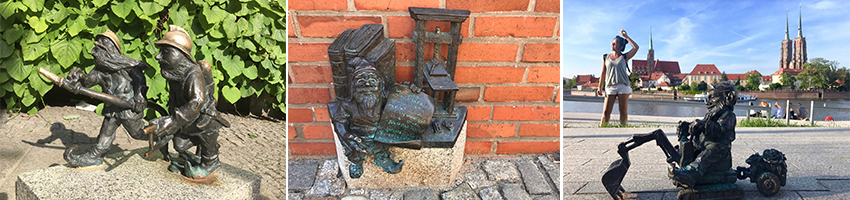
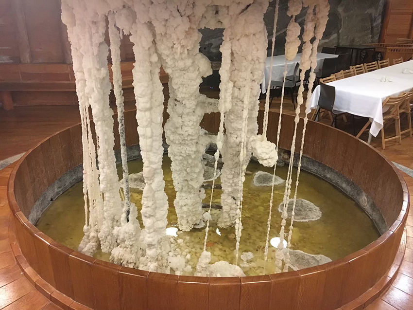
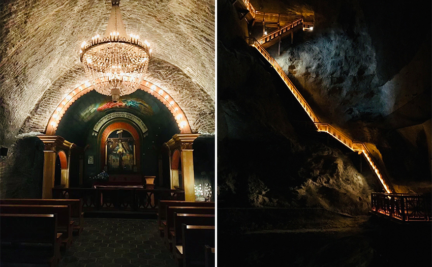
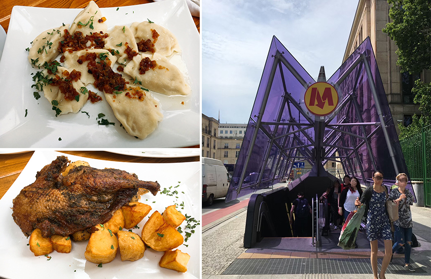

波蘭，一個從來不在我旅遊清單中的國家，被它的歷史、古老氣息和朋友慫恿下啟程了。
|  |
東歐一大特點就是建築多以紅磚瓦為主，波蘭首都 ＂華沙＂ 也不例外，即使因為二戰被摧毀，也努力將其原樣重現，世人俗稱這座城市如鳳凰般重生，新大樓交織著巴洛克風格的舊公寓，別有一番風情。
在市中心的廣場中擺放一座美人漁雕像是華沙的市徽，自古流傳一位名為Wars的漁夫在河邊捕獲一位美人漁叫Zawa，夫妻的名字合起來就是波蘭文的華沙Warszawa，而手持的劍與盾就像是永遠捍衛著波蘭人民，那樣堅定。
近期看到一篇報導，瞬間使我回憶湧現，複雜的心情有著尊敬、不捨和悲傷，這趟旅程選了幾個城市走訪，其中又以猶太人集中營最令我難忘…。這天陽光普照，位在郊區的＂奧斯威辛集中營＂帶著微微涼風，散步起來是舒服的，但當導覽員逐一分享每個場景背後的故事；每幅照片背後的涵義，舒服的天氣似乎開始令人發寒，原以為做好心理準備的我，看著一張又一張的美軍記錄當年營救時的場景相片，竟默默地眼眶泛淚，是誰有權利審判無辜的人呢？是誰有權利決定人的生與死？隨著更深入了解內心總感覺被一顆石頭壓住，還越來越大。
|  |
集中營內的軌道，天天運載著大量猶太人進入園區，每一節車廂內載滿惶恐的男女老少，當一輛列車駛入，代表成千上萬人遭受迫害，三條軌道來自不同地區不同國家的人卻面臨未知的命運，蓮蓬頭毒氣室真實存在，飢餓、苦勞、毒打、屍體無所不在，僅二年的時間，約莫110萬人在這裡被處死，可想一天的死亡人數以及每天要焚燒的屍體有多少，據說因為煙霧迷漫可以整日都看不到天空。此時的我們踏上這塊使無辜人民失去自由的土地上，即使已佈滿鮮花綠草，但依舊掩蓋不了歷史的存在，這一站我們的步伐走的最慢也最沉重。
|  |
幸好 最終，猶太人重拾自由，再數百萬名猶太人偉大犧牲後…。一位曾是心理學家的倖存者分享過：人所擁有的任何東西都可以被剝奪，唯獨人生中最後的自由。所以，享受人生吧！
| 下一站Worclaw （克拉科夫）。 |
|  |
相較於前一日的憂傷，這個城市格外生動，克拉科夫是波蘭的前首都，目前第二大城市也是歷代波蘭國王加冕即位之地，周邊有多個景點可以參觀，例如奧斯威辛集中營以及維利奇卡鹽礦…等，似乎受到藝術與音樂的薰陶，市容整潔活潑，更隨處可以在小角落發現各式生活樣貌的小矮人！ 讀書的、跳舞的、織毛衣的…似乎也同時反映著這座城市居民多采多姿的生活樣貌，推薦可以來這邊住幾晚當作中轉站，順便探索這繽紛的城市。
| 分享其中三款小矮人樣式，其它讓各位去探索！ |
|  |
| 維利奇卡鹽礦Wieliczka Salt Mine， 已成為世界遺產的鹽礦真的很壯觀，總長超過300公里，分為地下九層，還設有房間、禮拜堂、各式大 小雕像和地下湖泊…等，像極了地下皇宮，新設的教堂後來在1963年建成，內部還裝上華麗吊燈及圖騰地板，裡面真的大到不像在地底。 |
|  |
|  |
整體而言，東歐物價親民，交通相較於其他巴爾幹半島國家很方便，公車、地鐵也都算乾淨，有名的波蘭水餃可以嘗試但還是偏愛台灣味，值得嗎？當然值得，不論去哪裡，我總相信每一趟旅行都一定必有所獲。
|  |